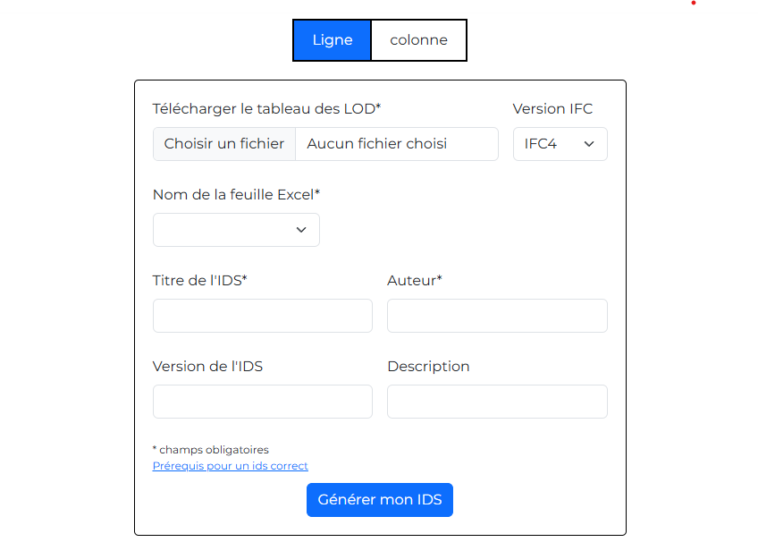

Ce site met à disposition des outils d'automatisation
EasyIDS
Cet outil permet de traduire les tableaux des LOD (qui définissent le niveau de détail et d'information requis pour les éléments d'un modèle BIM à chaque étape d'un projet, assurant une compréhension commune et une gestion efficace de l'information) en fichiers IDS (Information Delivery Specification). Cela permet de valider et de contrôler les données d'une maquette BIM.


EasyTCO
Cet outil permet de concaténer un tableau qui contient le prix global et forfaitaire pour un lot, afin de mieux organiser et centraliser les informations financières sur Logetex.